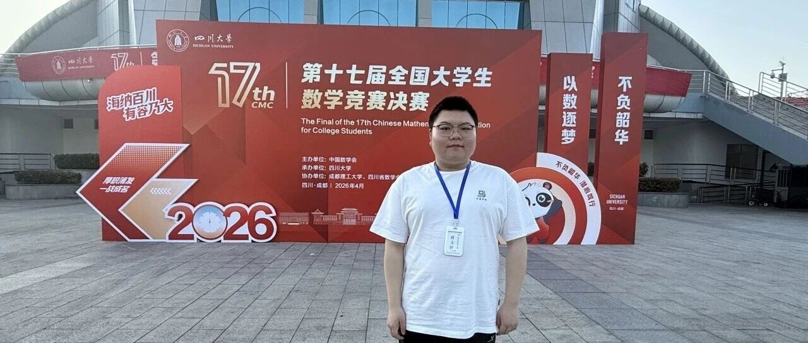
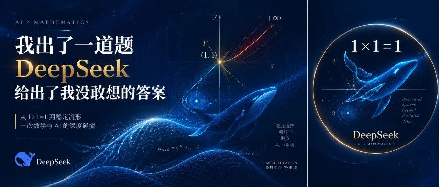
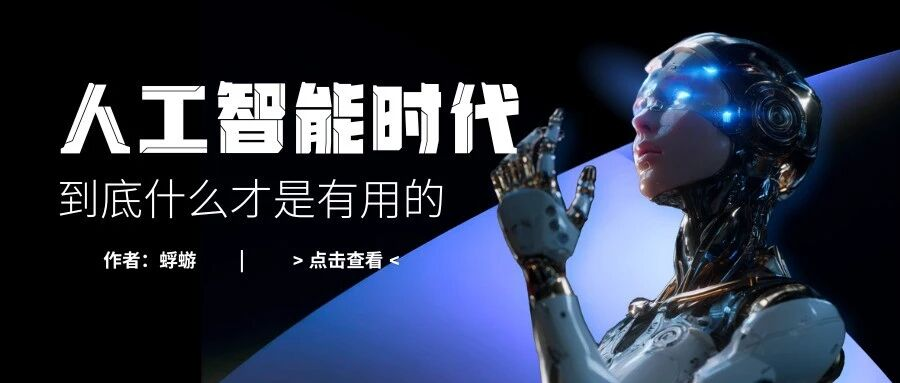
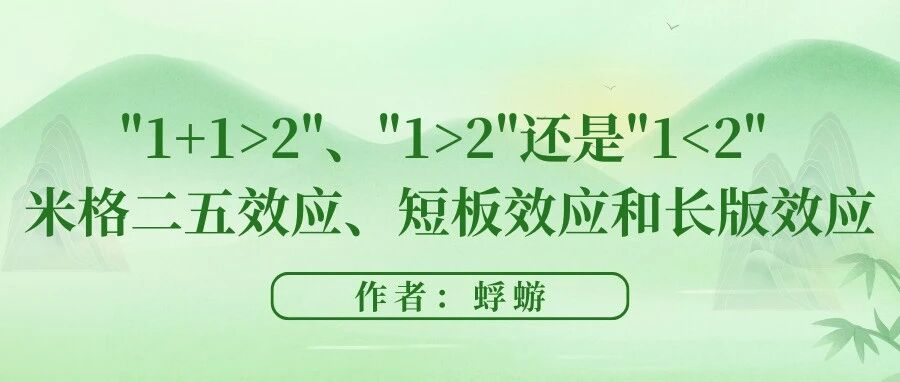
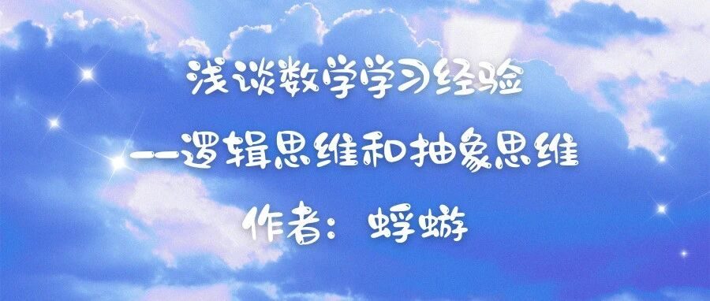
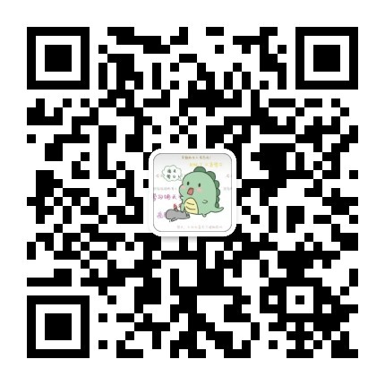

随笔 · 精选文章
蜉蝣览天地
一些零散的思考，发布在公众号「蜉蝣览天地」。


01
精选文章
点卡片跳转原文

CMC 经验：我与数学竞赛
全国大学生数学竞赛的经验与心得

DeepSeek 给出了我没敢想的答案
从一道数列题，体验 DeepSeek 的思考

人工智能时代，什么才是有用的？
AI 时代的一点思考
人工智能如何参与学习
AI 系列第二篇
一道高数选做题的思考
关于 2025 管院大联考选做 2

「1+1>2」还是「1<2」？
米格二五效应、短板与长板
诗歌 · 赠离别
一首写给离别的诗

数学学习①：正视与克服畏难
浅谈数学学习经验

数学学习②：逻辑与严谨（上）
浅谈数学学习经验

数学学习②：逻辑与严谨（下）
浅谈数学学习经验

数学学习③：抽象与寻根
浅谈数学学习经验

数学学习④：演绎·归纳·反演
浅谈数学学习经验
02
关注公众号

蜉蝣览天地
用微信扫一扫二维码，或在公众号搜索「蜉蝣览天地」关注。
更多随笔、读书与思考，都会先在这里发布。